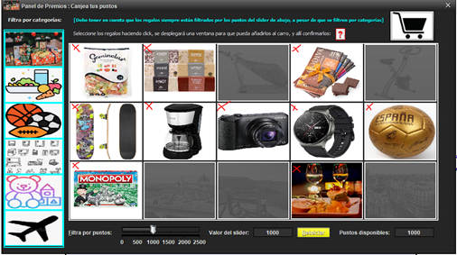
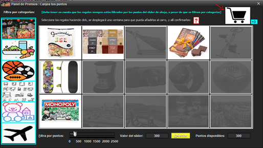

Para agregar regalos al carro de la compra debemos tener de hacer click en la foto del artículo que queremos comprar
y dependiendo si es un viaje u otra categoría se abrirá una ventana, donde allí especificaremos las unidades, la fecha
y las observaciones (estas dos últimas si se trata de un viaje). Al iniciar la aplicación y después de añadir un regalo,
estos siempre están filtrados bajo la puntuación que tenemos (el campo de texto de puntos disponibles de abajo a la derecha),
es decir, solo están disponibles aquellos cuyo precio (por unidad) sea menor o igual a los puntos que nos quedan.
En la foto, solo podemos añadir al carro aquellos artículos marcados con una “x” en rojo.

Una vez que hemos añadido los artículos que queríamos, apretamos al carro, que abajo a la derecha de este nos indica el
número de regalos que tenemos (si tenemos dos unidades de gominolas estas cuentan como un regalo solo, ya que son de uno concreto).
En este caso, tenemos tres regalos (en realidad, tres tipos de regalos, independientemente de sus unidades).
